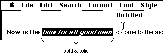

|
|
Some changes were made to TextEdit in System 6.0 to provide more functionality
and to make life easier for the programmer using TextEdit. This Note documents
those changes and enhancements.
[Dec 01 1988]
|
TextEdit Changes
In order to improve the usability of styled TextEdit, some routines have been
changed, and some new routines have been added. These changes exist in System
Software 6.0 and later. If you intend to rely on any of these changes or new
routines, it is important that you call _SysEnvirons first to make
sure you are running under System Software 6.0 or later.
_SysEnvirons is documented in Inside Macintosh, Volume V and
M.OV.GestaltSysenvirons. To check for the styled TextEdit changes, you might
do the following:
VAR
theWorld: SysEnvRec;
anErr : OSErr;
BEGIN
anErr := SysEnvirons(1, theWorld);
IF (anErr = noErr) AND (theWorld.systemVersion >= $0600) THEN ...
{System 6.0 or later}
|
Back to top
Changes to Existing Routines
_TEKey and _TEDelete have been changed so that backspacing to the
beginning of a style no longer deletes that style. Instead, the style is saved
in the nullScrap to be applied to subsequently typed characters. As
soon as the user has backspaced past the beginning of the style, or clicked in
some other area of the text, the style is removed.
GetStylScrap now returns a handle to a valid style scrap record when
called for an insertion point (selStart = selEnd).
NIL is still returned when GetStylScrap is called with an old
style TEHandle.
TESetStyle now accepts an additional mode, doToggle (=
32). When doToggle is specified along with doFace,
TESetStyle operates as follows: If a style specified in the given
TextStyle parameter exists across the entire selected range, that
style is removed (turned off). Otherwise, all of the selected text is set to
include that style. When a particular style is set for an entire selection
range, that style is said to be continuous over the selection.
For example, given that the following text is the current selection:

then the style bold is continuous over the selection range and the
italic style is not. If TESetStyle were called with a mode
of doFace + doToggle and a TextStyle tsFace
field of [bold], then the resulting selection would be:
On the other hand, if TESetStyle had been called with a mode of
doFace + doToggle and a TextStyle tsFace
field of [italic], then the selected text would have become:

Back to top
New TextEdit Routines
Some new routines have been added to TextEdit, TEContinuousStyle,
SetStylScrap, TECustomHook, and TENumStyles. These routines
are described in detail below.
Assembly language note:
The new TextEdit routines are called via the _TEDispatch trap.
Following are the decimal selectors for the new routines:
TEContinuousStyle 10
SetStylScrap 11
TECustomHook 12
TENumStyles 13
Back to top
TEContinuousStyle
FUNCTION TEContinuousStyle(VAR mode : Integer; VAR aStyle : TextStyle;
|
TEContinuousStyle gives you information about the attributes of the
current selection. The mode parameter, which takes the same values as
in TESetStyle, specifies which attributes should be checked. When
TEContinuousStyle returns, the mode parameter indicates which
of the checked attributes is continuous over the selection range and the
aStyle parameter is set to reflect the continuous attributes.
TEContinuousStyle returns TRUE if all of the attributes to be
checked are continuous and FALSE if not. In other words, if the
mode parameter is the same before and after the call, then
TEContinuousStyle returns TRUE.
For example, TEContinuousStyle is useful for marking the style menu
items based on the current selection.
mode := doFace;
IF TEContinuousStyle(mode, aStyle, myTE) THEN BEGIN
{ There is at least one face that is continuous over the
selection. Note that it might be plain which is actually
the absence of all styles. }
CheckItem(styleMenu, plainItem, aStyle.tsFace = []);
CheckItem(styleMenu, boldItem, bold IN aStyle.tsFace);
CheckItem(styleMenu, italicItem, italic IN aStyle.tsFace);
...etc.
END ELSE BEGIN
{ No text face is common to the entire selection. }
CheckItem(styleMenu, plainItem, FALSE);
CheckItem(styleMenu, boldItem, FALSE);
CheckItem(styleMenu, italicItem, FALSE);
...etc.
|
This function can also be used to determine the actual values for those
attributes that are continuous for the selection. Note that a field in the
TextStyle record is only valid if the corresponding bit is set in the
mode variable; otherwise the field contains garbage. For example, to
determine the font, face, size, and color of the current selection:
mode := doFont + doFace + doSize + doColor;
continuous := TEContinuousStyle(mode, aStyle, myTE);
IF BitAnd(mode, doFont) <> 0 THEN
{ Font for selection = aStyle.tsFont. }
ELSE
{ More than one font in selection. };
IF BitAnd(mode, doFace) <> 0 THEN
{ aStyle.tsFace contains the text faces (or plain) that are
common to the selection. }
ELSE
{ No text face is common to the entire selection. };
IF BitAnd(mode, doSize) <> 0 THEN
{ Size for selection = aStyle.tsSize. }
ELSE
{ More than one size in selection. };
IF BitAnd(mode, doColor) <> 0 THEN
{ Color for selection = aStyle.tsColor. }
ELSE
|
The aStyle.tsFace field is a bit tricky. When
TEContinuousStyle returns a mode that contains
doFace, and an aStyle.tsFace field that contains
[bold, italic], it means that the selected text is all bold and
all italic, but may contain other text faces as well. None of the other faces
will apply to all of the selected text, or they would have been included in the
tsFace field. But if the tsFace field is the empty set ([] = plain),
then all of the selected text is plain.
If the current selection range is an insertion point,
TEContinuousStyle returns the style information for the next character
to be typed. TEContinuousStyle will always return TRUE in
this case, and each field of the TextStyle record will be set if the
corresponding bit in the mode parameter was set.
Back to top
SetStylScrap
PROCEDURE SetStylScrap(rangeStart, rangeEnd : LongInt;
|
SetStylScrap performs the opposite function of GetStylScrap. The
newStyles parameter is a handle to a style scrap record which will be
applied over the given range of text. The current selection range is not
changed. If newStyles is NIL or hTE is a handle to
an old style TERecord, SetStylScrap does nothing.
SetStylScrap will terminate without error if it prematurely reaches the
end of the range or if there are not enough scrap style elements to cover the
whole range. In the latter case, the last style in the scrap record will be
applied to the remainder of the range.
Back to top
TENumStyles
FUNCTION TENumStyles(rangeStart, rangeEnd : LongInt;
|
This function returns the number of style changes contained in the given
range, counting one for the start of the range. Note that this does not
necessarily represent the number of unique styles for the range, because some
styles may be repeated. For old-style TextEdit records, this function always
returns 1.
This function is useful for calculating the amount of memory that would be
required for a contemplated _TECut or _TECopy. Since the
style scrap record is linear in nature, with one element for each style change,
you can multiply the result returned by TENumStyles by
SizeOf(ScrpSTElement) and add 2 to get the amount of memory that will
be needed.
Back to top
TECustomHook
PROCEDURE TECustomHook(which : TEHook; VAR addr : ProcPtr;
|
This procedure lets applications customize the functions of TextEdit by setting
the TextEdit bottleneck routines. The which parameter specifies which
bottleneck routine to replace, and is of type TEHook (described
below). When TECustomHook returns, the addr parameter
contains the address of the previous bottleneck routine specified by
which. This is returned so that bottleneck routines can be
daisy-chained.
The internally used fields, recalBack and recalLines now form
a handle to the list of TextEdit bottleneck routines. Each TERecord
has its own set of bottleneck routines to provide for maximum flexibility. The
TECustomHook procedure should always be used to change the bottleneck
routines instead of modifying the edit record directly.
Also, it is important to note that you should not clone a TERec.
Doing so would duplicate the handle stored in recalBack and
recalLines. When one of the TextEdit records was disposed, the handle
stored in the copy would be invalid, and TextEdit would crash.
There are four bottleneck routines, TEEOLHook, TEWidthHook,
TEDrawHook, and TEHitTestHook, described individually below.
When replacing these routines, note that all registers except those specified
as containing return values must be preserved. Registers A3 and
A4 contain a pointer and a handle to the TextEdit record respectively.
Line start positions can be obtained from the lineStarts array in the
edit record.
None of these bottleneck routines are called from _TextBox.
Back to top
TEEOLHook
This routine tests a given character and returns with the appropriate status
flags set in the status register. The default action is to merely compare the
character with $0D (a carriage return) and return.
On entry: D0 character to compare (byte)
A3 pointer to the TextEdit record (long)
A4 handle to the TextEdit record (long)
On exit: z flag clear if end-of-line character, set otherwise
Back to top
TEWidthHook
This routine is called any time the width of various components of a line are
calculated. The appropriate font, face, and size characteristics have already
been set into the current port by the time this routine is called. The default
action is to call _Char2Pixel and return.
On entry: D0 length of text to measure (word)
D1 offset into text (word)
A0 pointer to text to measure (long)
A3 pointer to the TextEdit record (long)
A4 handle to the TextEdit record (long)
On exit: D1 width of measured text (word)
Back to top
TEDrawHook
This routine is called any time the various components of a line are drawn.
The appropriate font, face, and size characteristics have already been set into
the current port by the time this routine is called. The default action is to
call _DrawText and return.
On entry: D0 offset into text (word)
D1 length of text to draw (word)
A0 pointer to text to draw (long)
A3 pointer to the TextEdit record (long)
A4 handle to the TextEdit record (long)
Back to top
TEHitTestHook
This routine is called to determine the character position in a line given the
horizontal offset, in pixels, from the beginning of a line. The default action
is to call _Pixel2Char and return. For more information, see the
description of _Pixel2Char in the Script Manager chapter of Inside
Macintosh, Volume 5 and the Inside Macintosh Interim Chapter Draft, Script
Manager 2.0.
On entry: D0 length of text to hit test (word)
D1 pixel offset from start of text (word)
A0 pointer to start of text (long)
A3 pointer to the TextEdit record (long)
A4 handle to the TextEdit record (long)
On exit: D0 pixel width to last offset (low word)
Boolean = TRUE if a character (high word)
offset corresponding to the pixel width was found.
D1 character offset (word)
D2 Boolean = TRUE if the pixel (word)
offset falls within the left side of the character.
Back to top
TextEdit Data Structures
The illustration on the following page is a graphic representation of the
TextEdit data structures. You should use this information only for debugging
and so you understand what is going on. For reading or writing these data
structures, the TextEdit routines should be used. This will help ensure future
compatibility.
Back to top
References
M.OV.GestaltSysenvirons
Back to top
Downloadables
|

|
Acrobat version of this Note (156K).
|
Download
|
|